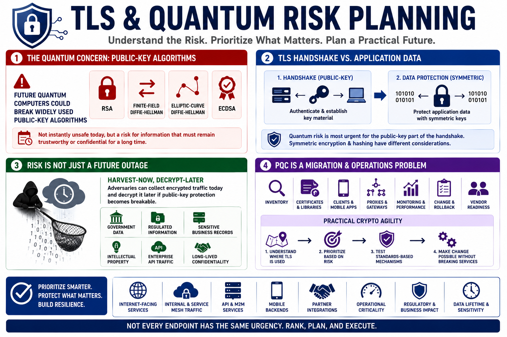

Quantum Risk and Web Traffic Prioritization
Connecting to LMS... Progress: in progress

Narration
The central quantum concern for TLS planning is that some widely used public-key algorithms are considered vulnerable to future cryptographically relevant quantum computers. RSA, finite-field Diffie-Hellman, elliptic-curve Diffie-Hellman, and ECDSA appear across many web and service environments. This does not mean every TLS endpoint is instantly unsafe today. It means teams should identify where these mechanisms protect information that must remain trustworthy or confidential over a long period.
Symmetric encryption and hashing are affected differently. They are still part of quantum risk discussions, but the migration pressure is not identical to the public-key case. In TLS, the public-key portion of the handshake is what makes captured traffic and future decryption scenarios especially important. The application data is protected with symmetric keys, but the way those keys were established may become the weak link for long-lived confidentiality.
Prioritization should consider data lifetime, confidentiality sensitivity, internet exposure, operational criticality, dependency complexity, and business or regulatory impact. Public-facing endpoints carrying sensitive data usually deserve attention. So do government and enterprise APIs, machine-to-machine services, mobile backends, internal service mesh traffic with sensitive business data, and partner integrations that cross organizational boundaries. A static brochure site has a different risk profile than an API carrying regulated records.
Not every endpoint has the same urgency, and that is good news. A mature program can rank systems instead of trying to change everything at once. Teams should identify high-value traffic, long-lived data, externally exposed services, clients that are hard to update, and dependencies controlled by vendors or cloud providers. Prioritization turns PQC from a vague concern into a sequenced roadmap that engineering and operations teams can actually execute.